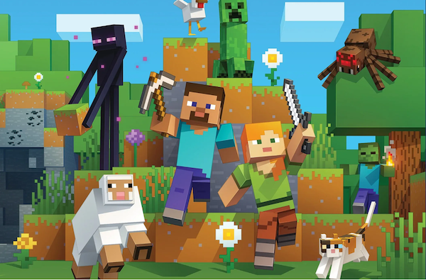

What is a mob?

A mob in Minecraft is any living, moving entity in the game that isn't a real-life player. There are passive mobs, like animals such as chickens, cows, horses, pigs, and villagers. They are usually for the main purpose of food, farming, and trading.
Neutral mobs like Endermen, Iron Golems, bees, etc are mobs that don't bother you unless hit or stared at (for Endermen). They turn hostile and attack once interacted with.
The category of mobs on this page is primarily neutral and hostile mobs. Hostile mobs like Creepers, zombies, and witches attack you on sight when they are close to you.